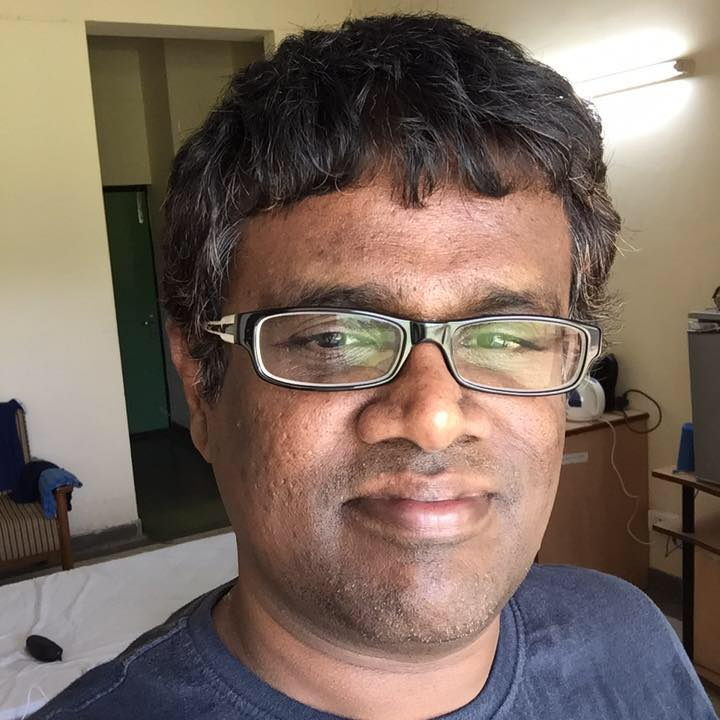

|  |
Presentations
- Exo-SIR: Model to Analyse the Impact of Exogenous Source of Infection
IIITDM, Kancheepuram, Chennai, June 23, 2022 (Invited Presentation).
- Exo-SIR: Model to Analyse the Impact of Exogenous Source of Infection
for Workshop “Exploring the recent research trends”, Tumkur University, Tumakuru, Karnataka on Mar 21, 2022 (Invited - Online Mode).
- On Fake News Detection and Virality of Fake News
AICTE-ISTE sponsored FDP on Digital Forensics and Cyber Crime May 26, 2021 Invited - Online Mode).
- Social Synchrony and Detecting Events in Online Social Media
IIITDM, Kacheepuram, Chennai, Dec 19, 2019 (Invited Presentation).
- Online Social Synchrony to Detect Events in Social Media
IIIT, Bangalore, as part of Workshop on Web Science for Development, Feb 27, 2019 (Invited Presentation).
- Online Social Synchrony and its Application to Detect Events in Social Media
BITS-Pilani, Hyderabad Campus, Dec 21, 2018 (Invited Speaker)
- Online Social Synchrony
Faculty Development Program on Deep Learning in Big Data Analytics, Swami Keshvanand Institute of Technology, Management and Gramothan, Jaipur, Nov, 2017 (Invited Speaker)
- On Social Synchrony in Online Social Networks
ACM Web Science Conference 2017, Troy, NY, USA, June, 2017. (Poster Presentation)
- Analysis of Human-Centric Elements in Social
Media
Faculty Development Program on Computational Intelligence
(Machine Based Learning), Manipal University, Jaipur, Jan 20, 2017. (Invited Talk shared with Nirmal Kumar Sivaraman)
- Peptide Computing - Challenges and My Contributions
Seminar Talk, Department of Computer Science and Engineering, IIT Jodhpur, Oct 12, 2014. (Invited)
- Peptide Computers
Workshop on Mathematical Modelling in Computer Science and Information Technology, School of Computing Science and Engineering, VIT University, Vellore, Feb 20, 2014. (Invited)
- Automata for Images
Workshop on Mathematical Modelling in Computer Science and Information Technology, School of Computing Science and Engineering, VIT University, Vellore, Feb 20, 2014. (Invited)
- Peptide Computing
Seminar Talk, School of Computing and Electrical Engineering, IIT Mandi, Jan 30, 2014. (Invited)
- The Effect of Affect in Social Media Analysis
Tech Talk, Advance Technology Lab, Adobe, Bangalore, Nov 25, 2013. (Invited)
- The Laws of Emotion
In Workshop on Cognition, Emotion and Computing, Infosys Limited, Bangalore, April 30, 2013. (Invited)
- Properties of Binding-Blocking Automata: A study
Sixth International Conference on Bio-Inspired Computing: Theories and Applications, Penang, Malaysia, September 27–29, 2011.
- An Event-Response model Inspired by Emotional Behaviors
International Conference on Brain Informatics, University of Lanzhou, Lanzhou, China, September 7–9, 2011.
- Mathematics in Bio-Computing
76th Annual Conference of the Indian Mathematical Society (IMS 2010), Sardar Val- labhbhai National Institute of Technology, Surat, Gujarat, India, December 28, 2010. (Invited)
- Tutorial on Molecular Computing
Mathematics & IT Conference (Ramanujan Rediscovered), International Institute of Information Technology, Bangalore, June 3, 2009. (Invited)
- Peptide Computing: A Brief Survey and some Open Problems
Institute of Mathematical Sciences, Chennai, October 17, 2007. (Invited)
- Computational Models Inspired by Peptide Computing
Chennai Mathematical Institute, Chennai, October 19, 2007. (Invited)
- Peptide Computing: A Brief Survey and some Open Problems
Indian Institute of Technology, Delhi, November 19, 2007. (Invited)
- Non-Determinism in Peptide Computers
Workshop on Automata for Cellular and Molecular Computing, held as part of 16th International Symposium on Fundamentals of Computational Theory, Computer and Automation Research Institute of the Hungarian Academy of Sciences (MTA SZTAKI), Budapest, Hungary, Aug 31, 2007.
- Workshop on Language Theory in Biocomputing, Unconventional Computation 2007, Kingston, Ontario, Canada. Automaton Models Inspired by Peptide Computing, August 15, 2007 (pdf)
- Fifth International Conference on Unconventional Computation 2006, University of York, York, UK. Peptide Computing - Universality and Theoretical Model, September 7, 2006 (pdf)
- Helmut Lab, Department of Computer Science, University of Western
Ontario. Parallel Communicating Pushdown Automata
Systems, March 24, 2005 (ps pdf)
- Biocomputing Lab, Department of Computer Science, University of
Western Ontario. Computing Models using Peptide-Antibody
Interactions, August 24, 2004 (ppt
pdf)
- Helmut Lab, Department of Computer Science, University of Western
Ontario. Computing Models using Peptide-Antibody
Interactions, August 13, 2004 (ppt
pdf)
- International Institute of Information Technology, Hyderabad,
India. Computing Models using Peptide-Antibody
Interactions, Invited Talk, April 6, 2004 (ppt pdf)
- Second PhD Seminar Talk, Department of Computer Science and
Engineering, IIT Madras, India. Computing Models using Peptide-Antibody
Interactions, October 15, 2003 (ps pdf)
- Fifth International Workshop on Information Processing in Cells
and
Tissues, EPFL, Lausanne, Switzerland. Parallel Computation of Simple
Arithmetic using Peptide-Antibody Interactions, September 11, 2003 (ppt pdf)
- First PhD Seminar Talk, Department of Computer Science and
Engineering, IIT Madras, India. Peptide Computing and Binding-Blocking
Automata, March 13, 2003 (Ist set: ppt pdf) (2nd set: ps pdf)
- National Conference on Algorithms and Artifical Systems, Madras
University. Invited Talk, Algorithms for Peptide Computers, Jan 31,
2003 (ppt pdf)
- International Workshop on Descriptional
Complexity
of Formal Systems, University of Western Ontario, London, Ontario,
Canada. Complexity
Issues in Binding-Blocking Automata, Aug
24, 2002 (ps pdf)
- Seventh International Meeting on DNA based Computers, University
of South Florida, USA. Universality and Complexity, June 13, 2001 (ppt pdf)
- Masters Seminar Talk, Department of Computer Science and
Engineering, IIT Madras, India. Distributed Processing in
Automata, Feb 25, 2000 (ps pdf)
|
|